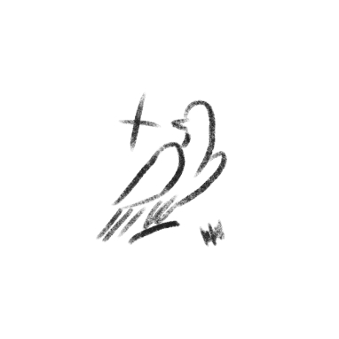
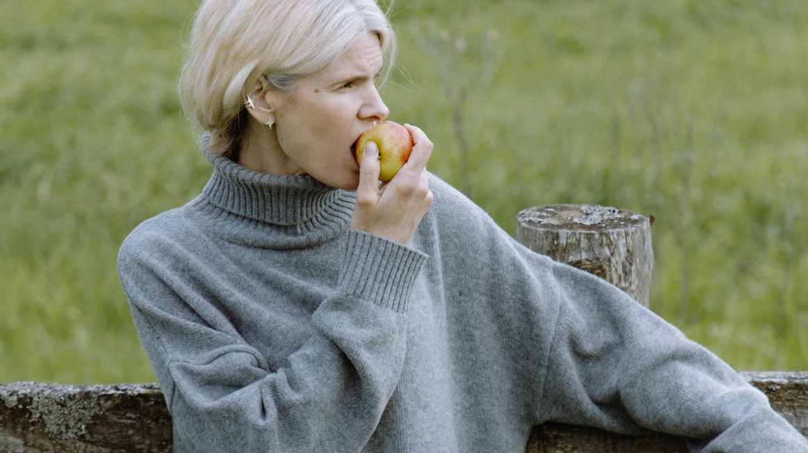
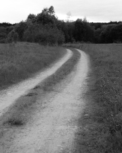

все коллекции
LAB (Limited Edition)
LAB — особенная линия украшений, созданных вручную в единственном экземпляре или ограниченным тиражом. Главные украшения в коллекции — кольца-печатки с инталиями, ручной резьбой по камню. Также в коллекции можно найти помолвочные и обручальные кольца из золота с драгоценными камнями
One of a kind украшения-эксперименты, связывающие истории прошлого с настоящим

Инталия — одна из самых древних техник резьбы по камню, создающая обращённый внутрь рельеф. Камни мы нашли в антикварных лавках во время путешествий — когда-то
они тоже были чьими-то печатками.
На каждом камне запечатлён необычный сюжет или рисунок (лев, пегас, олень, силуэт человека), все они уникальны и не повторяются. Для них мы вручную изготовили
оправы из серебра и придали текстуру, которая рифмуется с камнем. Поэтому на кольцах вы найдёте множество памятных зазубринок, потертостей, нервностей — как дань
времени.
Смотреть все изделия
другие коллекции

CLASSIC
Нашаистория началась с большой любви к натуральным камням, а украшения с ними всегда были неотъемлемой частью бренда.

ON THE WAY TO lab
Наша новая коллекция, посвященная культовому музыкальному фестивалю «Вудсток» 1969 года.